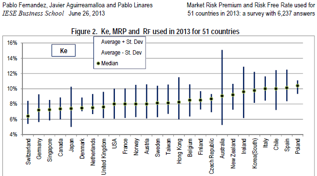

rCharts Error Bar of Equity Risk Premium Survey
One of my favorite surveys from academic research on finance is an international survey on market risk premium run by the IESE Business School at the University of Navarra. Even though I look at it occasionally every year, I never noticed the error bar plot.

This looks remarkably similar to a custom error bar d3 plot that I implemented for rCharts. I guess there are a few of these in the wild. See Long Winding Road Marked with Error Bars and Tweets for one example and this NY Times Article for another.
I just could not resist making this error bar plot of market risk premium interactive.
Data
All data came from this fine article, so attribution and credit should be entirely directed there.
Market Risk Premium and Risk Free Rate Used for 51 Countries in 2013A Survey with 6,237 Answers
Fernandez, Pablo and Aguirreamalloa, Javier and Linares, Pablo
June 26, 2013
Available at SSRN: http://ssrn.com/abstract=91416
I did a little copy/paste magic from pdf into Excel and then saved it as a .csv file. With R, we will read it with the following line of code.
# data source: http://ssrn.com/abstract=91416
mrp <- read.csv("ssrn-id914160.csv",stringsAsFactors=F)
Interactive Error Bar with d3 and rCharts
This is still just a sketch, but I think it offers a very good proof of concept.
## using very experimental version of rCharts
## require(devtools)
## install_github("rCharts", "timelyportfolio", ref = "test-speedimprove")
require(rCharts)
#set working directory to a local and change setLib and templates$script
#if going to github gh-pages repo not desired
#path = "http://timelyportfolio.github.io/rCharts_errorbar"
path = ".."
ePlot <- rCharts$new()
ePlot$setLib(path)
ePlot$templates$script = paste0(path,"/layouts/chart.html")
#not the way Ramnath intended but we'll hack away
ePlot$params = list(
data = subset(mrp,variable=="mrp"),
height = 500,
width = 900,
margin = list(top = 10, bottom = 10, right = 50, left = 100),
x = "Country",
y = "mean",
radius = 3,
sort = list( var = "mean" ),
whiskers = "#!function(d){return [d.mean - 1.96 * d.sd, d.mean + 1.96 * d.sd]}!#",
tooltipLabels = c("Country","mean","sd")
)
ePlot
#example of facetting
ePlotFacet <- rCharts$new()
ePlotFacet$setLib(path)
ePlotFacet$templates$script = paste0(path,"/layouts/chart.html")
ePlotFacet$params = list(
data = mrp,
height = 500,
width = 900,
margin = list(top = 10, bottom = 10, right = 50, left = 100),
x = "Country",
y = "mean",
color = "Country",
radius = 4,
sort = list( var = "mean" ),
whiskers = "#!function(d){return [d.mean - 1.96 * d.sd, d.mean + 1.96 * d.sd]}!#",
tooltipLabels = c("Country","variable","mean","sd"),
facet = list(y = "variable") #add y for facet grid
)
ePlotFacet
Thanks
As you can hopefully tell, I depended heavily on lots of folks to write this little post. Thanks to:
1. Ramnath Vaidyanathan - @ramnath_vaidya
2. Carson Sievert - @cpsievert
2. Iain Dillingham
4. Fernandez, Pablo and Aguirreamalloa, Javier and Linares, Pablo
5. Mike Bostock
6. Everybody else that has contributed R and d3 examples online. I probably have looked at them.